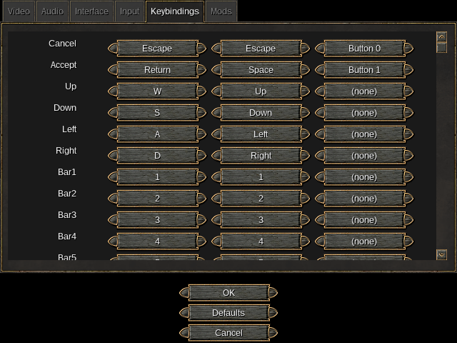

2014/06/26 23:51:01

Today, I fixed up a few last things pertaining to joystick support. These changes make it possible to change joystick button bindings via the configuration menu, as well as unbind keys completely.
In addition, I finally fixed a bug with WidgetScrollBox. When dragging the knob of a scrollbar attached to a WidgetScrollBox, it was impossible to scroll all the way to the bottom.
2014/06/24 15:43:54

About 2 weeks ago, I wrote a patch for SpaceFM that adds support for video thumbnails. It was something that I wanted for a while now, and it was already an open issue on SpaceFM's bug tracker.
Thanks to ffmpegthumbnailer, implementing the feature was pretty easy. All I had to do was add some code to determine if a file is a video, and add the relavant ffmpegthumbnailer bits to the existing thumbnailing code. Although, I got a bit tripped up when I forgot about the filesize limit that SpaceFM uses for thumbnails (maximum of 32MB). Since most videos are over 32MB, thumbnail generation was being skipped. After disabling the filesize limit for video files when thumbnailing, everything just worked.
I haven't submitted a pull request to the SpaceFM project yet, because my code makes ffmpegthumbnailer a required dependency of SpaceFM. Ideally, having video thumbnail support should be optional at compile time, but I've been too lazy to set that up properly. If you want to try the patch for yourself, pull in my branch.
2014/06/24 03:36:44
So, I've been wanting to put up some sort of blog here for a while now. Since this is hosted on Github, a static blog was appropriate. There's plenty of static blog generators out there (Jekyll probably being the most popular), but none of them appealed to me. Most of them are written in a slow, interpreted language like Ruby, or they are overkill for my needs.
Since *nix systems are already great at text processing, I decided to just roll my own using Markdown and some Bash scripts. What I came up with consists of three scripts:
- A script to generate non-blog pages
- A script to generate blog pages
- A script to create a new blog post; aliased to "blog" in my shell
(No link to script #3, so I'll show it here):
#!/bin/bash
BLOGPATH="$HOME/Projects/dorkster.github.com"
BLOGDATE="$(date -u +"%Y/%m/%d %H:%M:%S")"
BLOGFILE="$(echo $BLOGDATE | sed -e 's/\//-/g' -e 's/:/-/g' -e 's/ /_/g').md"
PAGETITLE="## $BLOGDATE"
vim /tmp/$BLOGFILE
if [ -r "/tmp/$BLOGFILE" ] && [ -d "$BLOGPATH/.git/" ]; then
echo -e "$PAGETITLE\\n" | cat - /tmp/$BLOGFILE > "$BLOGPATH/markdown/blog/$BLOGFILE"
rm /tmp/$BLOGFILE
cd "$BLOGPATH"
sh markdown/scripts/generate_blog.sh
git add index.html blog*.html markdown/ images/
git status
fi
It took a bit of time for me to put all this together, but it seems to work perfectly. I might make some later tweaks and additions (like an RSS feed), but this should be satisfactory for now.